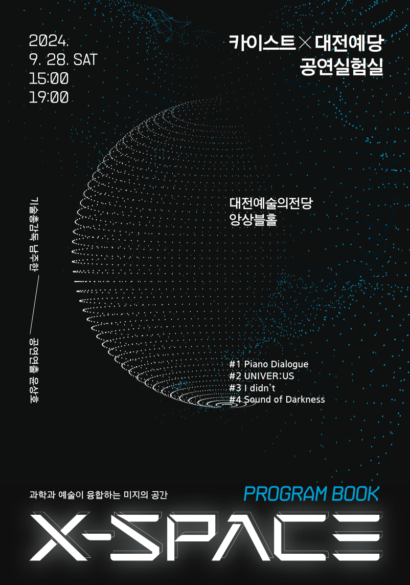
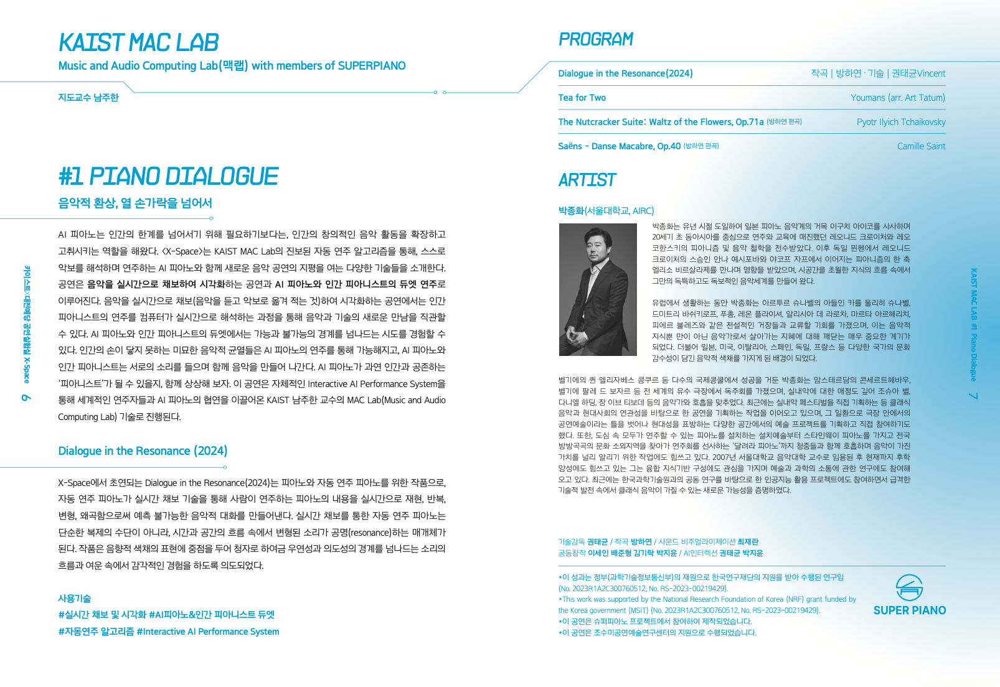
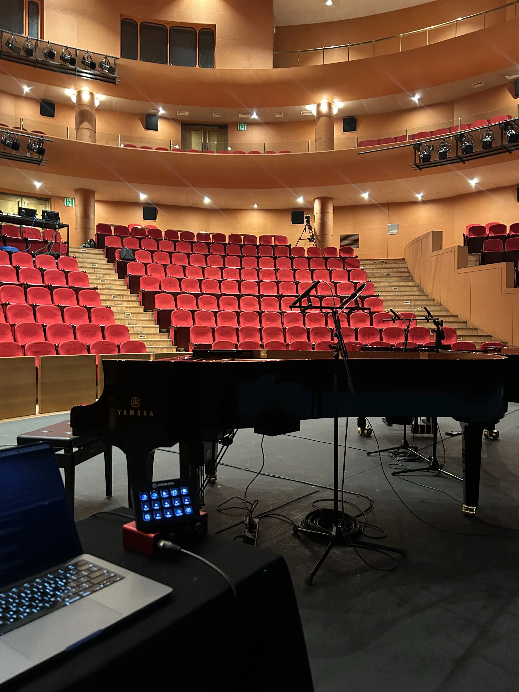
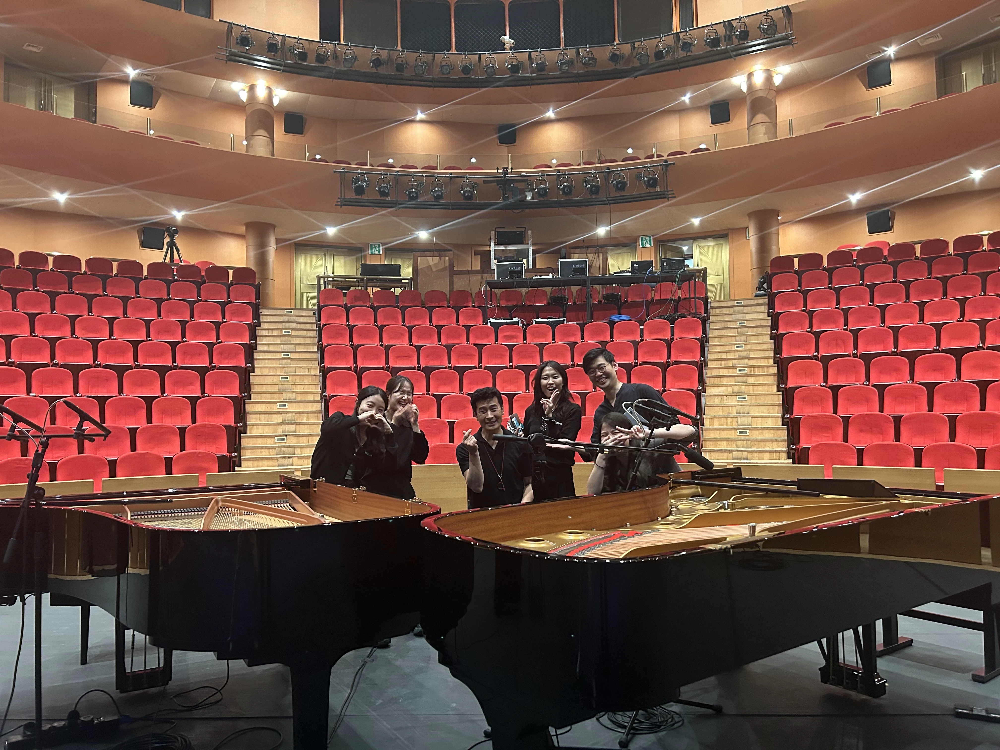
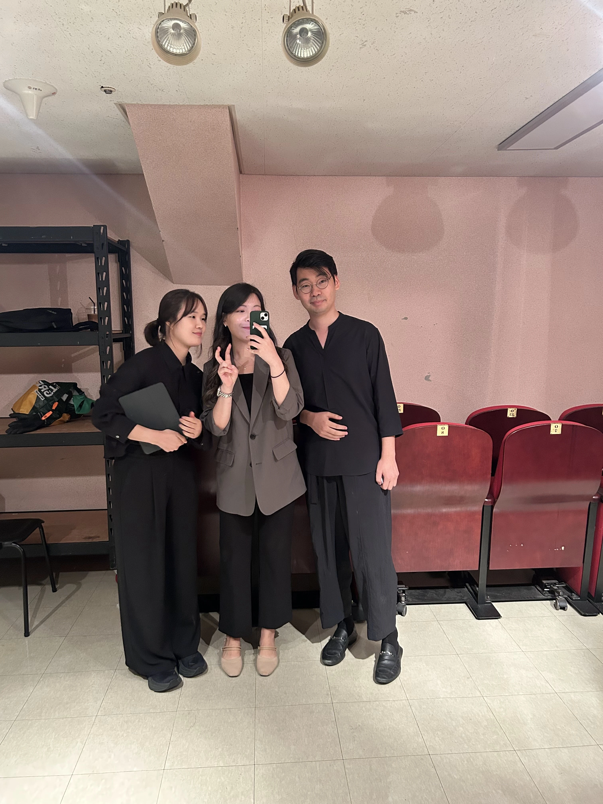
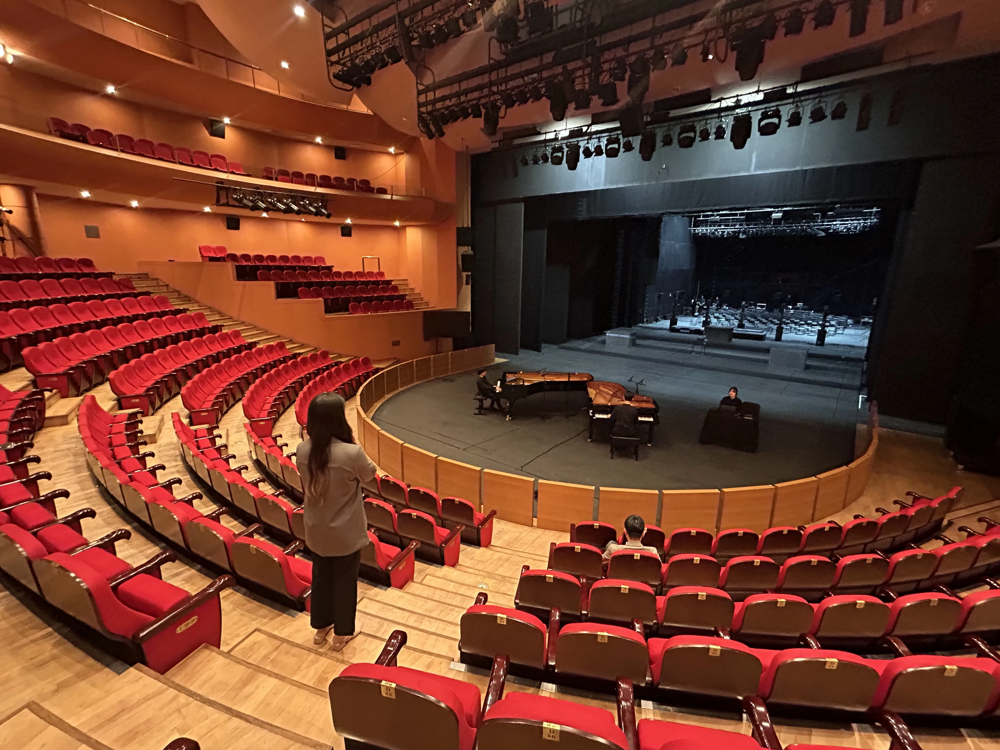
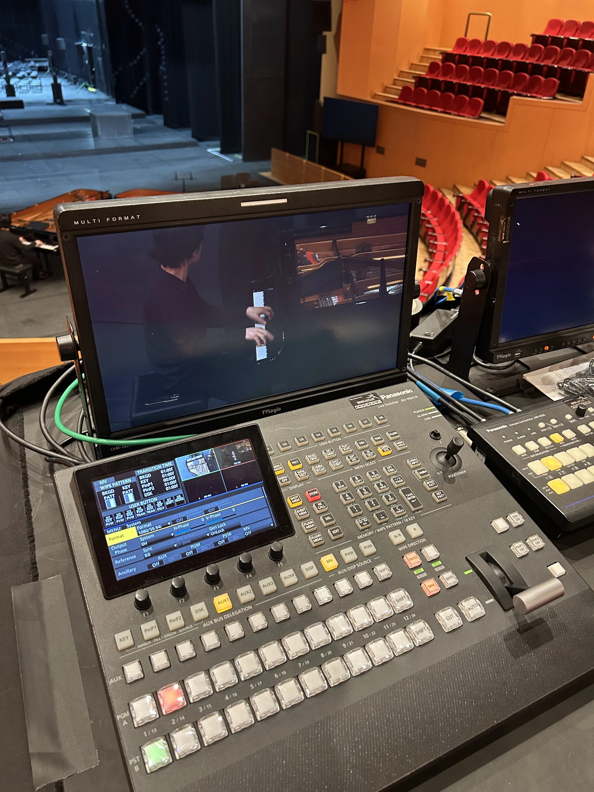
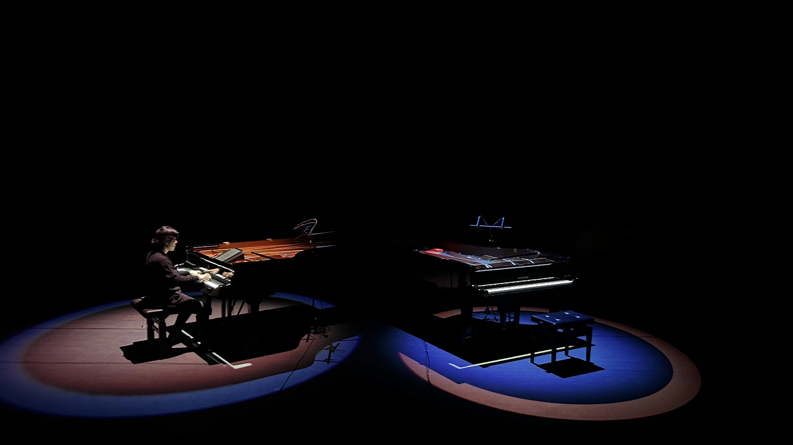

Poster & Program Book


My Contributions
Composer, music director, arranger, and repertoire curator
- Composed Dialogue in the Resonance (2024), the opening work premiered at X-Space.
- Served as music director, shaping the musical direction and performance flow of the full program.
- Selected the full concert repertoire for the AI piano and human pianist collaboration.
- Arranged Tchaikovsky's Waltz of the Flowers and Saint-Saens' Danse Macabre for this performance context.
Performance Overview
AI pianos are not simply tools for surpassing human limitations. They have also expanded and inspired human creative musical activity. X-Space introduces technologies that open new horizons for musical performance through KAIST MAC Lab's advanced automatic performance algorithms, presenting an AI piano that interprets and performs scores on its own.
The performance combines real-time music transcription and visualization with duet performances between an AI piano and a human pianist. In the transcription and visualization work, audiences can intuitively experience a new encounter between music and technology as a computer interprets a human pianist's performance in real time.
In the duet performances, audiences encounter attempts that move across the boundary between the possible and the impossible. Subtle musical ruptures beyond the reach of human hands become possible through the AI piano, while the AI piano and human pianist create music together by listening and responding to one another.
The performance invites audiences to imagine whether an AI piano can become a "pianist" that coexists with humans. It is powered by the technology of KAIST Prof. Juhan Nam's Music and Audio Computing Lab, whose Interactive AI Performance System has enabled collaborations between internationally renowned performers and AI piano.
Featured Work
Dialogue in the Resonance (2024)
Premiered at X-Space, Dialogue in the Resonance is a work for piano and automatic piano. Using real-time transcription technology, the automatic piano reproduces, repeats, transforms, and distorts what the human pianist plays, creating an unpredictable musical dialogue. Rather than serving as a simple means of replication, the automatic piano becomes a medium through which transformed sounds resonate within the flow of time and space. Centered on acoustic color, the work invites listeners into a sensory experience shaped by streams and afterimages of sound, moving between chance and intention.
Technologies
The performance brings together real-time music understanding, visualization, and automatic performance technologies for live human-AI musical interaction.
Program
Dialogue in the Resonance (2024)
Composition: Hayeon Bang | Technology: Taegyun Kwon
Original work for piano and automatic piano, premiered at X-Space.
Tea for Two
Vincent Youmans, arranged by Art Tatum
A jazz standard reimagined through the vocabulary of human-AI piano performance.
The Nutcracker Suite: Waltz of the Flowers, Op. 71a
Pyotr Ilyich Tchaikovsky, arranged by Hayeon Bang
Arranged for the expressive and technical possibilities of the AI piano performance system.
Danse Macabre, Op. 40
Camille Saint-Saens, arranged by Hayeon Bang
Arranged to explore virtuosic gestures beyond the physical limits of ten fingers.
Artist
Jonghwa Park
Seoul National University, AIRC
Jonghwa Park has built a distinctive musical world through a lineage of pianism that spans Japan, Germany, and the broader European tradition. His artistry has been shaped by studies and encounters with influential teachers and legendary musicians, as well as by a continuing interest in the relationship between classical music, contemporary society, and emerging technology.
Read full artist bio
Park moved to Japan in childhood and studied with Aiko Iguchi, a major figure in Japanese piano music. Through this training, he inherited the pianistic lineage and musical philosophy of Leonid Kreutzer and Leo Kochanski, who were active as performers and educators across East Asia in the early twentieth century. He later studied in Munich, Germany, where he encountered Eliso Virsaladze, connected to another branch of pianism extending from Anna Yesipova and Yakov Zak. Within this flow of knowledge across time and place, Park developed a musical language that is both highly individual and unmistakably his own.
During his years in Europe, Park had opportunities to engage with legendary musicians including Karl Ulrich Schnabel, son of Artur Schnabel, Dmitri Bashkirov, Fou Ts'ong, Leon Fleisher, Alicia de Larrocha, Martha Argerich, and Pierre Boulez. These encounters became important turning points not only in his musical knowledge, but also in his understanding of how to live as a musician. They also contributed to the wide range of cultural colors in his music, shaped by Japan, the United States, Italy, Spain, Germany, France, and beyond.
After achieving success at several international competitions, including the Queen Elisabeth Competition in Belgium, Park gave recitals at leading venues around the world such as the Concertgebouw in Amsterdam and the Palais des Beaux-Arts in Belgium. Deeply committed to chamber music, he has performed with musicians including Joshua Bell, Daniel Harding, and Jean-Yves Thibaudet. More recently, he has planned chamber music festivals and other projects that explore the relationship between classical music and contemporary society.
Park has also worked beyond the traditional frame of concert-hall performance, planning and participating in artistic projects in a variety of contemporary spaces. His public-facing projects range from installation art that places pianos in urban spaces for anyone to play, to Run, Piano, a project that brings a Steinway piano to culturally underserved regions across Korea. Through these activities, he continues to share the value of music with broader audiences.
Since joining the faculty of Seoul National University's College of Music in 2007, Park has devoted himself to educating the next generation of musicians. He is also interested in building interdisciplinary knowledge and has participated in research on communication between art and science. Recently, through projects based on collaborative research with KAIST, he has helped demonstrate new possibilities for classical music amid rapid technological change.
Photos





